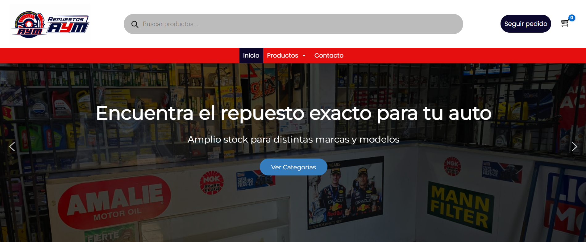

LABORAL · E-COMMERCE
Repuestos AYM
Desarrollo integral de una tienda online para la comercialización de repuestos automotrices.

Sobre el proyecto
Repuestos AYM es una tienda online desarrollada para la comercialización de repuestos automotrices. El proyecto contempla la creación y configuración integral del sitio, desde su planificación inicial hasta su puesta en producción.
Mi participación
Participé en las distintas etapas del desarrollo del proyecto, incluyendo planificación, diseño, implementación, configuración, pruebas y puesta en producción.
- Planificación y estructura del sitio.
- Diseño y desarrollo de la interfaz.
- Configuración de WordPress y WooCommerce.
- Organización del catálogo de productos.
- Implementación de búsqueda y filtros.
- Integración del sistema de pagos Webpay.
- Adaptación responsive para dispositivos móviles.
- Pruebas y corrección de errores.
- Configuración y puesta en producción.
Resultado
El proyecto culminó con una tienda online funcional orientada a facilitar la búsqueda y compra de repuestos automotrices.